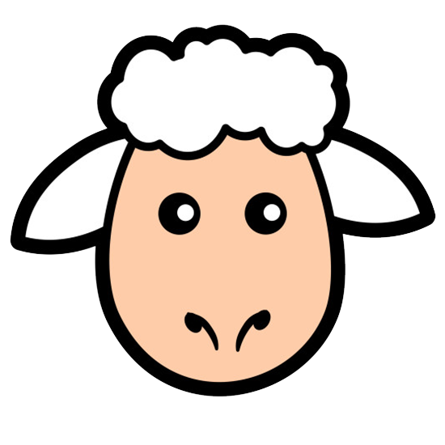
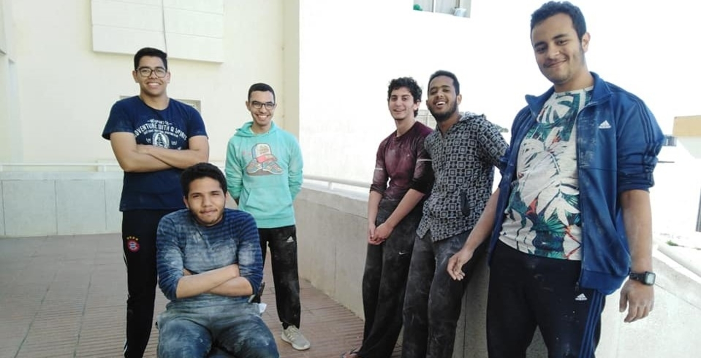
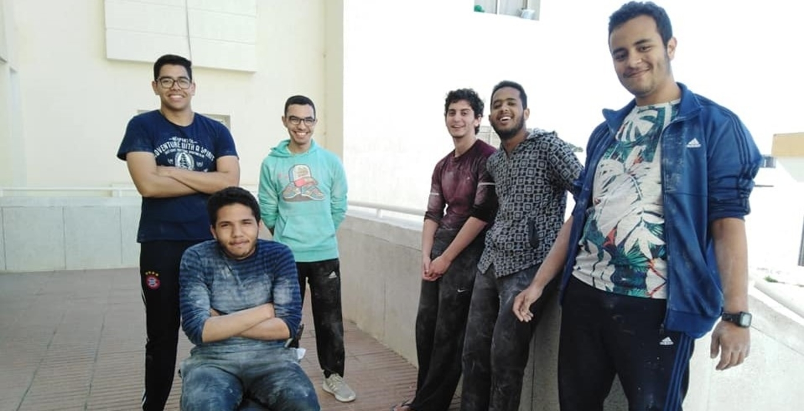

Fondé en 2007, le club d'Initiative Nationale pour le Développement Humain (CINDH) est un club social non lucratif fondé par les élèves ingénieurs de l'ENSIAS. Les activités sont dédiées aux différentes couches nécessiteuses de la communauté.
Notre but est d'aider des gens qui subsistent dans un cycle vicieux de la vie, rajeunir leur état d'esprit ou juste leur apporter un sourire.
Notre mission, dans le cadre de la planification de nos activités, est de viser plus de cas, améliorer notre perspective et rehausser l'esprit de partage. "Le bonheur. C’est de donner et d'aider les autres" -Henry Drummond-
Cindh is more than
just a charity
#CINDH
OUR VALUES
Solidarity
Team spirit is expressed through the solidarity of all members
Commitment
We commit ourselves to go after the most difficult projects
Respect
Exchanges are based on mutual respect and acceptance of diversity of opinions
OUR ACTIVITIES
-
Le club CINDH organise annuellement un convoi social-médical en faveur d’un douar, d’une zone montagneuse reculée et démunie du Maroc afin d’assurer des vêtements, des couvertures et des paniers alimentaires aux familles résidentes, aussi une caravane médicale qui apportera des soins médicaux et des médicaments au plus grand nombre de résidents, tout à l’aide d’une équipe pluridisciplinaire de médecins..
-
Donner son sang est un geste simple et solidaire qui permet de soigner 1 million de patients chaque année, C’est pour cela cette activité est devenue indispensable pour notre club. Cette année nous avons pu organiser deux éditions de cette activité, et ceci était en collaboration avec le Centre de Transfusion Sanguin de Rabat. Cette année, un effectif d’environ 145 à été au rendez-vous pour participer à cet évènement,70 dans la première activité et 75 pour la deuxième. « Don de Sang, Don de vie » Un témoin : « Sans le don du sang, je ne serais pas là ! ».
-

Hommage aux femmes de ménage
Le club organise pour la deuxième fois une journée en faveur des femmes de ménage au sein de notre école. L’activité a été faite le mois de décembre, dont le nombre des femmes atteint 28. Les membres du club ont réussi à gagner la satisfaction de ces femmes qui étaient pleines de joie grâce à cette initiative. Des chants, des fleurs, des cadeaux et des repas ont été partagés tout au long d’une activité « pas comme les autres ».
-
Personne ne peut nier la souffrance et la misère vécues quotidiennement par ces enfants même les adultes. Par conséquent, une activité leur était dédiée uniquement dans le but de partager notre soutien et notre amour. Notre collectivité et notre courage intense nous a mené à eux dans un temps plus tard d’une nuitée tout en sachant le danger qui est présent à tout moment. Nous ne pouvions pas leur offrir beaucoup, juste de la nourriture et des vêtements avec ce qu’ils étaient si heureux et soulagés. Le risque était élevé, mais voir leurs larmes et leurs sourires était inestimables.
-

Réaménagement d’une école primaire
CINDH Ensias a pensé à mener pour la 4éme fois une action de sensibilisation à l’environnement à travers le réaménagement d’école OULED CHAOUI aux environs de benslimane tout au but de fournir un espace agréable et encourageant, permettant ainsi aux élèves de s’épanouir et de s’apercevoir de leur propre potentiel. En plus des activités concernant l’infrastructure de l’école (repeint de 8 classes et des toilettes , réparation..),des ateliers de sensibilisation et de jardinage auraient place pour pousser les élèves à comprendre que nous sommes tous responsables de l’état de notre environnement et qu’un petit geste peut effectuer un changement radical.
-

Eid Al Adha
Implication, responsabilité et motivation sont mis à l’épreuve lors de la réalisation de cette activité qui coïncide avec les vacances d’été . Malgré les contraintes de distance et de disponibilité, les membres de notre club ont uni leurs efforts pour aboutir a des résultats qui nous ont empli de fierté. Cette année, et pour la première fois nous avons atteint le maximum jusqu’à présent, nous avons réussi à apporter la joie à 30 familles réparties sur 5 régions.
Projets Durables
-

Projets durables du convoi
Dieu Merci, cette année nous avons réussi à réaliser un projet durable en faveur des femmes de la région. Des machines à coudre ont été distribuées à 6 femmes qui souffrent le plus, avec une formation de 3 mois qui a été assurée par une couturière.
-

Achat d’un chariot
Une équipe est chargée de visiter un vieil homme malade à Casablanca afin de déceler ses besoins. Ce vieil homme prend comme source financière la vante de la menthe avec laquelle il s’en sert aux besoins de sa vielle femme après avoir été abandonnés par leurs enfants. Nous nous sommes alors chargés de l’achat d’un nouveau chariot pour lui faciliter le travail et contribuer un minimum à l’épanouissement de son projet.
-

Prise en charge d’une opération
Notre club a pu collecter une somme de 7000 dhs afin de soutenir un étudiant qui avait besoin d’établir une opération. Ainsi il peut couvrir les coûts de l’opération et les frais des médicaments.
-
Après la visite d’une femme veuve enceinte ,mère d’un petit enfant, malade et souffre de la pauvreté nous avons pensé à lui offrir une machine à coudre qui lui permettra de satisfaire ses besoins, d’assurer une rentrée d’argent régulière et d’améliorer la qualité de ses produits vu qu’elle était couturière en herbe.
 

❮
❯
les affiches de Cindh